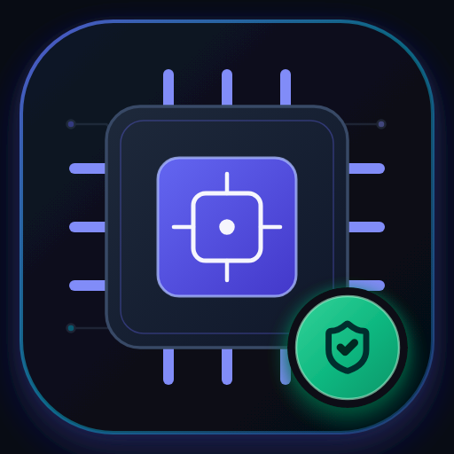
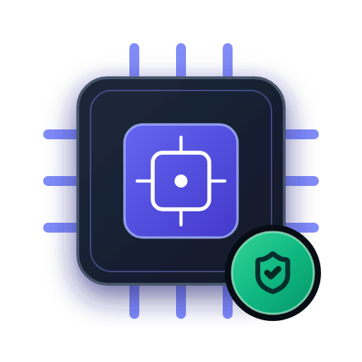
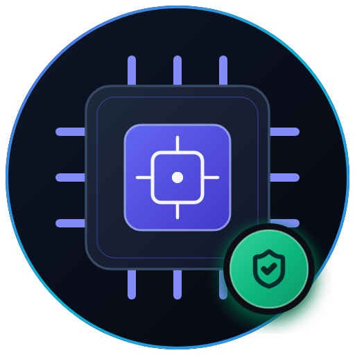
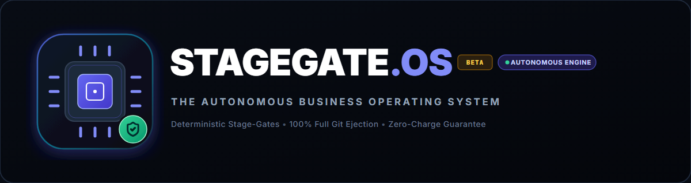
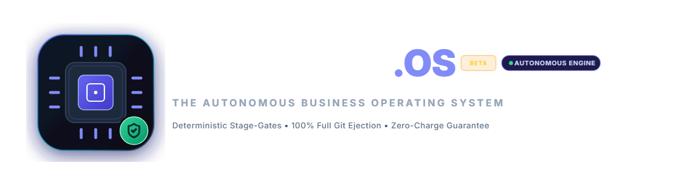
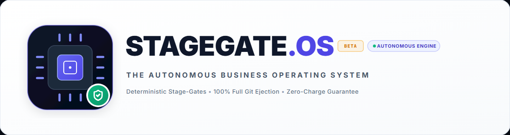
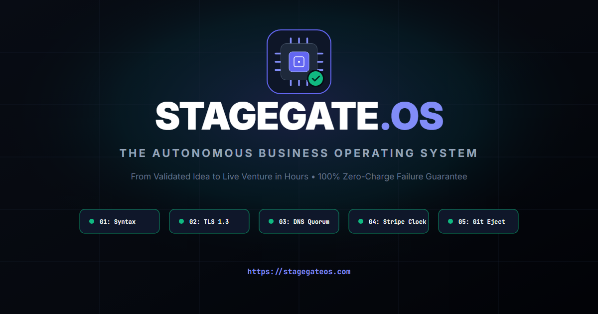

Stage Gate OS Logo & Asset Hub
Download production-ready vector SVGs, high-resolution raster PNGs, favicons, app icons, and social media banners for Stage Gate OS.
Primary Brand Icon & Glyph
Autonomous Engine Silicon Die with G1–G5 Stage-Gate Verification Shield
Square Dark (Default)
PWA, App Stores & Desktop

{kind=link}
{kind=link}
{kind=link}
{kind=link}
Transparent Silicon Die
For overlays, decks & docs

{kind=link}
{kind=link}
{kind=link}
Circular Avatar
X (Twitter), GitHub & Slack profiles

{kind=link}
{kind=link}
{kind=link}
Horizontal Brand Lockups
Wordmark, Autonomous Engine Glyph & Positioning Subtitle
Dark Mode Lockup (Primary)
Recommended for web headers, dark decks, and video overlays
{kind=link}
{kind=link}

Transparent Lockup
Zero background color for custom backdrop designs
{kind=link}
{kind=link}

Light Mode Lockup
For white papers, investor PDFs, invoices, and light documentation
{kind=link}
{kind=link}

Social Media & Open Graph Banner
Formatted for Twitter/X cards, LinkedIn previews, and GitHub social banners
{kind=link}
{kind=link}

Brand Palette & Design Tokens
Official hexadecimal color codes and typographic parameters